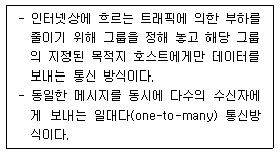

방사선비파괴검사기사(구) (2009-03-01 기출문제)
1과목: 방사선투과시험원리
1. 다음 중 작은 불연속이나 결함을 분리, 검출할 수 있는 능력과 가장 관계가 깊은 것은?
- 관용도, 필름명암도
- γ값, 사진농도
- 비감도, 계조도
- 선명도, 분해능
(정답률: 알수없음)

2. 방사선의 에너지가 증가되면 피사체콘트라스트(Subject Contrast)는 어떻게 되는가?
- 감소한다.
- γ값, 사진농도
- 증가한다
- 에너지의 곱에 비례한다.
(정답률: 알수없음)
3. 방사선투과시험에서 Laue법의 경우 X선 회절에 대한 설명으로 옳은 것은?
- 필름에 하얀 점으로 나타난다.
- 모든 X선이 특정한 방향으로 회절한다.
- 특성스펙트럼으로부터 얻은 X선빔이 결정시편을 통해 진행한다.
- 1차 방사선빔은 산란선에 의한 fogging을 방지하기위해 놓은 납차폐체에 흡수된다.
(정답률: 알수없음)
4. 방사선투과시험의 연박증감지(스크린)에 대한 설명 중 틀린 것은?
- 연박증감지는 주로 150kV 이상의 전압을 사용하는 경우 사용한다.
- 연박증감지는 주로 전방에 후방보다 두꺼운 증감지를 사용하여 1차 방사선을 흡수한다.
- 연박증감지는 사진 작용을 증대시킨다.
- 산란방사선의 영향을 감소시켜 사진의 명암도와 선명도를 증대시킨다.
(정답률: 알수없음)
5. 표적물질이 텅스텐으로 된 X선 발생장치에 관전압200kV를 인가하였다면 X선 전환능률은 약 얼마인가? (단, 텅스텐의 원자번호는 74 이다)
- 1.1%
- 1.5%
- 2.9%
- 3.7%
(정답률: 알수없음)
6. 다음 중 고유 비방사능(Ci/g)이 가장 큰 방사성 동위 원소는?
- Co-60
- Cs-137
- Ir-192
- Tm-170
(정답률: 알수없음)
7. 다음 비파괴검사법 중 발생 중인 결함의 검출에 가장 효과적인 시험법은?
- 음향방출시험
- 초음파탐상시험
- 와전류탐상시험
- 중성자투과시험
(정답률: 알수없음)
8. 방사선투과시험에서 사진처리작업중 정착얼룩과 정착액의 성능저하를 방지하기 위해 처리하는 작업은?
- 현상처리
- 정지처리
- 정착처리
- 수세처리
(정답률: 알수없음)
9. 다음 중 발포누설시험법(Bubble Test)의 장점이 아닌 것은?
- 큰 누설을 쉽게 찾음
- 누설부위를 직접 검출 가능
- 시험이 간단하고 비용이 저렴
- 시험방법 중 작은 결함에 대한 감도가 가장 우수
(정답률: 알수없음)
10. 다음 중 초음파탐삼시험에서 두꺼운 판의 용입부족을 검출하는데 가장 좋은 방법은?
- 평행 주사
- 지그재그 주사
- 탠덤(tandem) 주사
- 오비탈(orbital) 주사
(정답률: 알수없음)
11. 다음 비파괴검사법 중 알루미늄합금에 대한 결함 검출 감도가 가장 나쁜 것은?
- 방사선투과시험
- 초음파탐상시험
- 자분탐상시험
- 침투탐상시험
(정답률: 알수없음)
12. 다음 중 방사선투과시험과 비교한 초음파탐상시험의 장점이 아닌 것은?
- 시험체 두계에 대한 영향이 적다.
- 미세한 균열성 결함의 검사에 유리하다.
- 결함의 형태와 종류를 쉽게 알 수 있다.
- 한쪽 면에서만 접근할 수 있어도 탐상이 가능하다.
(정답률: 알수없음)
13. 헬륨질량분석 진공시스템 내부표면의 불순물 등에 흡수되어 있던 가스가 천천히 방출되면서 나타나는 허위누설을 무엇이라 하는가?
- 안개현상(Fog up)
- 가스유출(Out gassing)
- 장애현상(Hang up)
- 흐름신호(Flow signal)
(정답률: 알수없음)
14. 다음 중 침투탐상제를 이용한 누설시험에서 침투탐상 시험과는 달리 포함되지 않아도 되는 절차는?
- 전처리
- 침투처리
- 세척처리
- 현상처리
(정답률: 알수없음)
15. 다음 중 방사선투과시험의 장점이 아닌 것은?
- 내부결함의 검출이 가능하다.
- 물질의 큰 조성 변화 검출이 가능하다.
- 검사결과를 영구적으로 기록할 수 있다.
- 방사선빔 방향에 평행한 판형결함의 검출이 용이하다.
(정답률: 알수없음)
16. 비자성체의 표면 및 표면직하 결함을 표면 개구 여부에 관계없이 검출하고자 할 때 다음 중 어느 방법이 가장 적한한가?
- 자분탐상시험
- 침투탐상시험
- 음향방출시험
- 와전류탐상시험
(정답률: 알수없음)
17. 다음중 비파괴검사의 종류와 그 특성을 연결한 것으로 틀린 것은?
- 음향방출시험 - 동적 결함검사
- 와전류탐상시험 - 전도체의 표면검사
- 전자초음파공명법 - 고온재료의 접촉검사
- 핵자기공명 단층영상법 - 수소원자핵의 분포를 영상화
(정답률: 알수없음)
18. 다음 중 납 용기나 철 케이스 내에 들어 있는 물질의 양을 검사하는데 효과적인 비파괴검사법은?
- 누설검사
- 침투탐상시험
- 초음파탐상시험
- 중성자투과시험
(정답률: 알수없음)
19. 결함의 종류에 따른 비파괴시험 방법을 열거한 것으로 적절하지 않은 것은?
- 언더컷의 검출은 방사선투과시험
- 내부기공의 검출은 자분탐상시험
- 변형은 게이지를 이용한 육안검사
- 표면에 개방된 균열의 검출은 침투탐상시험
(정답률: 알수없음)
20. 와전류 탐상시험에서 프로브형 탐촉자로 평판 형대의 시험편을 검사할 때, 시험편의 표면과 코일 사이의 간격이 변화하면 와전류 신호가 발생한다. 이러한 현상을 정의하는 용어는?
- 충전율(fill factor)
- 리프트 오프(lift off)
- 위상분별(phase analysis)
- 모서리 효과(edge effect)
(정답률: 알수없음)
2과목: 방사선투과검사
21. 맛대기 용접부의 방사선 투과사진에서 최고 및 최저 농도에 대한 설명으로 옳은 것은?
- 최저 농도는 중앙 용접부의 가장 낮은 값을 나타낸다.
- 최고농도는 용접부의 양끝단 가장 높은 값을 나타낸다.
- 최고 농도는 좌우 양끝단 용접부의 농도 중 가장 높은 값을 나타낸다.
- 최저 농도는 좌우 양끝단 용접부의 농도 중 가장 낮은 값을 나타낸다.
(정답률: 알수없음)
22. 노출도표에 대한 다음 설명중 틀린 것은?
- X선발생장치는 동일한 관전압이라도 성능에 따라 노출조건이 달라질 수 있으므로 구입하였을 때 노출도표를 작성하여야 한다.
- X선발생장치는 상당기간 사용 후에는 성능이 달라질 수 있으므로 노출도표를 다시 작성하여야 한다.
- 감마선원을 사용하는 경우 방사성 동위원소가 동일 하여도 시험체 재질에 따라 작성하여야 하며 반감기마다 다시 작성하여야 한다.
- 노출도표를 작성하기 위해서는 우선적으로 사용하는 재질로 이루어진 스텝웨지와 사용하고자 하는필름의 특성곡선이 준비되어야 한다.
(정답률: 알수없음)
23. 형광증감지의 형광체가 X선 조사로 형광을 방출하는 주된 원리는?
- 여기작용
- 흡수작용
- 분자의 분해
- Cerenkov 복사
(정답률: 알수없음)
24. 다음 중 압연 강재에 있는 내부 결함으로서 기포 또는 불순물 등에 의해 압연 방향을 따라 층상조직으로 형성된 결함은?
- 균열
- 편석
- 슬리버
- 라미네이션
(정답률: 알수없음)
25. 강판이 판두께 방향으로 큰 인장응력을 받고 있는 용접이음부에서 강판 표면에 평행하게 발생하는 층상의 균열을 라멜라테어(lamellar tear)라 한다. 다음 중 라멜라테어의 발생원인이 아닌 것은?
- 변형시효
- 수소취화
- 판두께 방향의 압축 응력
- 재료 중의 비금속 개재물
(정답률: 알수없음)
26. 다음 중 방사선 투과사진의 피사체콘트라스트에 영향을 주는 인자가 아닌 것은?
- 산란방사선
- 방사선 선질
- 스텝웨지 크기
- 시험체의 두께차
(정답률: 알수없음)
27. X선 발생장치의 관전류의 조정기를 조작할 경우 나타나는 현상은?
- 음극과 양극거리가 증가한다.
- 표적의 재질을 조정한다.
- 필라멘트 전류를 조정하여 방사선의 양이 많아진다.
- 전압과 파형의 조정으로 파장이 짧은 방사선이 발생한다.
(정답률: 알수없음)
28. 방사선 투과사진에서 용재의 용입은 양호하나 용융이 부적절하여 용접금속과 모재 사이에 매우 좁고 직선의 검은 선들로 용접부의 한쪽 면에 평행하게 나타나는 결함은?
- 언더컷
- 용입부족
- 융합불량
- 슬러그혼입
(정답률: 알수없음)
29. 강용접부에서 기공이 발생하는 가장 일반적인 원인은?
- 용융금속의 응고수축에 의해 발생
- 두꺼운 부분과 얇은 부분의 응고속도 차이에 의해 발생
- 용융시 높은 온도와 먼지, 녹, 모래 및 수분과 같은 불순물에 의해 발생
- 지나친 용접봉의 움직임으로 인한 용접비드 사이에 서의 슬래그 유입에 의해 발생
(정답률: 알수없음)
30. 어떤 X선관에서 발생되는 X선의 최단 파장이 0.02Å, 최장 파장이 0.08Å 이었다. 이 때 가해진 관전압은 약 몇 kV인가? (단, 플랑크 상수는 6.63×10-34J・s, 1eV 는 1.602×10-19J이며, X선관에서의 흡수는 무시한다.)
- 160kV
- 310kV
- 620kV
- 940kV
(정답률: 알수없음)
31. 방사선 투과사진의 수동현상과 자동현상을 비교 설명한 것 중 자동현상에 대한 설명으로 틀린 것은?
- 아주 정밀하게 조절되는 시간-온도 현상법이다.
- 수동현상에 비해 짧은 시간에 현상처리가 가능하다.
- 용액의 온도가 수동현상에 비해 낮으므로 가열히터가 필요하지 않다.
- 탱크와 건조기가 별도로 필요하지 않으므로 현상실의 크기가 작아도 된다.
(정답률: 알수없음)
32. 다음 중 계조계는 주로 어디에 사용되는가?
- 결함의 크기 판정시
- X선 필름의 감도 측정시
- 투과사진의 상질 평가시
- X선 필름의 콘트라스트 결정시
(정답률: 알수없음)
33. 다음 중 용접부 투과사진의 유효길이 범위 내에서 투과도계의 식별도는 만족하지만 사진 농도의 일부분이 만족되지 않은 경우 가장 적절한 처리 방법은?
- 투과사진을 재촬영한다.
- 만족되지 않는 농도 부분만 판독한다.
- 식별도가 만족되면 농도와는 상관없이 판독한다.
- 식별도가 만족되는 부분과 농도가 만족되지 않은 부분 모두를 판독한다.
(정답률: 알수없음)
34. 텅스텐을 표적으로 하는 X선관에서 관전압을 변경하는 경우 발생하는 X선의 파장과 강도의 관계에서 관전류를 일정하게 하고 관전압만 상승시킬 때 일어나는 현상의 설명으로 틀린 것은?
- X선의 선질이 변한다.
- X선의 강도는 커진다.
- 최고 강도는 짧은 쪽으로 이동한다.
- 최단파장(λmin)은 긴 쪽으로 이동한다.
(정답률: 알수없음)
35. Ir-192 30Ci 인 선원에 대하여 38cm 인 철판을 차폐체로 사용했다면 차폐체를 투과한 강도는 약 몇 Ci인가? (단, 철판에 대한 Ir-192 의 반가층은 약 15cm이다.)
- 3.7Ci
- 5.2Ci
- 7.5Ci
- 10.4Ci
(정답률: 알수없음)
36. 다음 중 방사선투과검사에서 명료도(Definition)에 영향을 미치는 인자와 거리가 먼 것은?
- 관전류
- 필름의 종류
- 증감지의 종류
- 증감지-필름 접촉상태
(정답률: 알수없음)
37. 필름에 직접 접촉된 납스크린의 3가지 주요 기능이 아닌 것은?
- 형광작용 증대
- 필름의 사진작용 증대
- 파장이 긴 산란방사선 흡수
- 투과사진의 콘트라스트와 선명도 증대
(정답률: 알수없음)
38. 용접 파이프를 이중벽양면촬영법(DWDI)으로 촬영하는 경우에 관한 설명으로 틀린 것은?
- 투과도계를 시험체의 선원쪽에 두어야 한다.
- 노출시간을 벽두께의 1.2배로 계산하여야 한다.
- 파이프 용접부의 전 길이를 검사하고 할 경우 최소 2회 이상 촬영하여야 한다.
- 미국기계학회(ASME)에서는 배관의 공칭외경이 3.5인치 이하일 경우에만 사용하도록 권고하고 있다.
(정답률: 알수없음)
39. 방사선 동위원소 Ir-192 를 사용하는 경우, 일반거으로 사용되는 전방 연박증감지(lead foil screen)의 두께범위로 옳은 것은
- 0.01~0.015cm
- 0.025~0.⑤cm
- 0.1~0.2cm
- 0.3~0.5cm
(정답률: 알수없음)
40. 두꺼운 강용접부의 방사선투과검사에서 형광증감지를 사용하는 주 목적은?
- 상질의 개선
- 초고압 X선 감광
- 노출시간 단축
- 사진의 명료도 개선
(정답률: 알수없음)
3과목: 방사선안전관리,관련규격및컴퓨터활용
41. 강용접 이음부의 방사선투과 시험방법(KS B 0845)에서 두께가 80mm 인 평판형상의 강용접부를 투과 하여 얻은 투과사진상이 1종 결함일 때 결함으로 산정하지 않는 크기는 몇 mm이하인가?
- 1.12mm
- 1.54mm
- 1.72mm
- 2.04mm
(정답률: 알수없음)
42. 방사선 측정기기 중 방사선 작업구역 부근의 방사선량을 측정하기 위한 기기는?
- 필름배지
- 서베이미터
- 포켓선량계
- 열혈광선량계
(정답률: 알수없음)
43. 알루미늄 주물의 방사선투과 시험방법 및 투과사진의 등급분류 방법(KS D 0241)에서 대상으로 하는 결함과 형상이 아닌 것은?
- 수축(별 모양)
- 수축(스펀지 모양)
- 가스 포로시티(봉모양)
- 가스 포로시티(원모양)
(정답률: 알수없음)
44. 보일러 및 압력용기에 대한 방사선투과검사(ASMESec.V.Art.2)에 따라 원통형 시원체에 선원을 시험체 축 위에 놓고 한번의 노출로 원주 전체가 1개이상의 필름홀더를 사용하여 촬영되는 경우 필요한 투과도계의 최소 개수는?
- 1개
- 3개
- 5개
- 필름마다 각 1개씩
(정답률: 알수없음)
45. 방사성 동위원소 또는 방사선발생장치의 사용실 및 작업실에 방사능 표지를 출입구에 붙이고자 할때 방사능 표지의 반지름 최소 크기로 옳은 것은?
- 5cm
- 10cm
- 15cm
- 20cm
(정답률: 알수없음)
46. 다음 중 같은 종류의 단위로 옳게 짝지워진 것은?
- R : Bq
- Gy : J/kg
- rem : Sv/h
- rad/h : C/kg
(정답률: 알수없음)
47. 원자력법 시행령에서 규정하는 일반인에 대한 연간 유효 선량한도는 몇 밀리시버트 인가?
- 1
- 5
- 12
- 15
(정답률: 알수없음)
48. 보일러 및 압력용기에 대한 방사선투과검사(ASME Sec.V.Art.2)에서 단일벽 관찰을 할 때 필름측에 위치마커를 부착해야 하는 경우는?
- 볼록한 면이 선원을 향해 있는 구형인 시험체
- 편평한 시험체나 원통형 또는 원추형 시험체의 길이 이음부
- 오목한 면이 선원을 향해 있고 선원-재료간 거리가 시험체의 안쪽 반지름보다 큰 곡선형인 시험체
- 오목한 면이 선원을 향해 있고 선원-재료간 거리가 시험체의 안쪽 반지름보다 작은 구형인 시험체
(정답률: 알수없음)
49. 3Mev γ선에 대한 알루미늄의 질량감쇠계수가 0.09cm2/g일 때 알루미늄의 3Mev γ선에 대한 반가층은 약 몇 cm인가? (단, Al의 밀도는 2.7g/cm3이다.)
- 0.3cm
- 0.7cm
- 2.2cm
- 2.9cm
(정답률: 알수없음)
50. 다음 중 인체에 대한 방사선 피폭을 줄이기 위한 방법으로 적절하지 않은 것은?
- 차폐체를 이용한다.
- 방사선원을 제거한다.
- 방사선원을 분쇄한다.
- 방사선구역으로부터 벗어난다.
(정답률: 알수없음)
51. 강용접 이음부의 방사선투과 시험방법(KS B 0845)에서 결함 분류는 모두 몇 종별로 분류하는가?
- 2
- 3
- 4
- 5
(정답률: 알수없음)
52. 원자력법에서 규정한 방사선 관리구역에 대한 설명으로 틀린 것은?
- 외부의 방사선량률이 관계 부령이 정하는 값을 초과할 우려가 있는 곳으로 안전을 위하여 방사선의 장해를 방지하기 위한 조치가 필요한 구역
- 내부 피폭선량이 관계 부령이 정하는 값을 초과할 우려가 있는 곳으로 안전을 위하여 건강검진을 실시하는 곳으로 출입자의 통제가 필요한 구역
- 공기 중의 농도가 관계 부령이 정하는 값을 초과할 우려가 있는 곳으로 방사선의 안전을 위하여 사람의 출입 관리 조치가 필요한 구역
- 방사성물질에 의하여 오염된 물질의 표면의 오염도가 관계 부령이 정하는 값을 초과할 우려가 있는 곳으로 출입자에 대하여 방사선의 장해를 방지하기위한 조치가 필요한 구역
(정답률: 알수없음)
53. 보일러 및 압력용기에 대한 표준 방사선투과검사(ASME Sec.V. Ar.22 SE-1025)에 따라 유공형 투과도계를 사용하여 투과검사를 수행 중이다. 투과 사진의 감도 레벨이 2-2T 로 요구될 때, 50mm 인강재에 대한 투과도계의 두께는?
- 1mm
- 2mm
- 3mm
- 4mm
(정답률: 알수없음)
54. 보일러 및 압력용기에 대한 표준방사선투과검사(ASME Sec.V. Art.22 SE-1025)에서 직사각형 투과도계 측면에 노치(notch)를 가공하여 노치의 위치 및 개수를 표시하는 목적은 무엇인가?
- 투과도계의 재질을 구분하기 위하여
- 투과도계의 감도를 구하기 위하여
- 투과도게의 설계방법을 파악하기 위하여
- 투과도계의 두계를 구하기 위하여
(정답률: 알수없음)
55. 강용접 이음부의 방사선투과 시험방법(KS B 0845)에서 모재 두께가 40mm 인 강용접부의 투과사진에 제2종 결함의 길이가 12mm인 경우의 결함분류는?
- 1류
- 2류
- 3류
- 4류
(정답률: 알수없음)
56. 다음 중 인터넷상에서 정보와 의견을 교환하기 위한 토론 그룹은?
- 고퍼
- 아키
- 텔넷
- 유즈넷
(정답률: 알수없음)
57. 다음 중 컴퓨터 운영체제에 대한 설명으로 틀린 것은?
- 하드웨어와 응용 프로그램간의 인터페이스 역할을 한다.
- CPU, 주기억장치, 입출력장치 등의 컴퓨터 자원을 관리한다.
- 컴퓨터 시스템의 전반적인 동작을 제어하는 시스템 프로그램의 집합이다.
- 사용자가 작성한 원시프로그램을 기계어로 된 목적 프로그램으로 변환한다.
(정답률: 알수없음)
58. 다음은 국가를 나타내는 도메인들이다. 영국에 해당하는 도메인 명은?
- au
- ca
- uk
- fr
(정답률: 알수없음)
59. 다음이 설명하고 있는 통신 방식은?

- 멀티캐스트
- 유니캐스트
- 애니캐스트
- 라우팅
(정답률: 알수없음)
60. 해커가 해킹을 하여 사용자 권한을 얻어낸 후 시스템 관리자의 권한을 훔치고, 이후 자신이 다음에 재침입할 것을 대비하여 만들어 놓고 나가는 프로그램을 무엇이라 하는가?
- 웜
- 스파이웨어
- 애드웨어
- 백도어
(정답률: 알수없음)
4과목: 금속재료학
61. 구리에 함유된 불순물 중 전기 전도도에 가장 악영향을 미치는 원소는?
- Ti
- Pb
- Mn
- Au
(정답률: 알수없음)
62. 다음 중 구상흑연 주철에 대한 설명으로 옳은 것은?
- 인장강도는 이하이다.
- 주조상태에서 흑연이 구상으로 정출한다.
- 피로한도는 회주철에 비해 1.5~2.0배 낮다.
- 구상흑연주철의 기지 조직은 페라이트만 존재한다.
(정답률: 알수없음)
63. 100배로 확대된 다결정 금속재료의 내부조직 사진에서 평방인치당 결정립자의 수가 64개일 때 이 금속 재료의 ASTM 결정입도는?
- 3
- 5
- 7
- 9
(정답률: 알수없음)
64. 금속의 회복(recovery)에 대한 설명중 틀린 것은?
- 결정 내부의 변형에너지가 감소하는 현상이다.
- 전기저항은 회복의 과정에서 서서히 증가하는 현상이다.
- 결정 내부의 항복강도가 감소하는 현상이다.
- 전위의 일부가 소멸되거나 또는 재배려되는 현상이다.
(정답률: 알수없음)
65. Cr계 슾인리스강의 취성에 대한 설명 중 틀린 것은?
- 고온취성은 700℃ 부근에서 나타난다.
- 저온취성은 페라이트 강에서 나타난다.
- 475℃ 취성은 크롬 10% 이상의 스테인리스강에서 375~540℃로 장시간 가열하면 나타난다.
- σ 취성은 800℃ 이상에서 가열하여 급냉하면 인성을 회복한다.
(정답률: 알수없음)
66. 일반적으로 상용한도가 300℃ 까지 사용할 수 있는 열전대는?
- Pt - PtㆍRh
- Cu - Constantan
- Chromel - Alumel
- Fe - Constantan
(정답률: 알수없음)
67. Hadfield 강에 대한 설명으로 틀린 것은?
- 오스테나이트 조직을 가진 강이다.
- 고온에서 서냉하면 결정립계에 가 석출한다.
- 고온에서 서냉하면 오스테나이트가 마텐자이트로 변태한다.
- 열전도성이 좋으며, 팽창계수도 작아 열변형이 없다.
(정답률: 알수없음)
68. 공저형 상태도를 나타내는 대표적인 합금은?
- Cu - Ni
- Au - Ag
- Al - Si
- Cd - Hg
(정답률: 알수없음)
69. 다음 동합금에 대한 설명으로 틀린 것은?
- Cu-Be 합금은 분산강화형 합금읻.
- 60%Cu-40%Zn 합금은 Muntz metal이라 하고 α상과 β상을 포함한 2중 조직을하고 있다.
- 탄피황동을 부식분위기에 놓았을 때 발생하는 응력부식 균열을 season cracking 이라 한다.
- 70%Cu-30%Zn 합금은 탄피 황동(Catridge brass)으로 불리며 강도와 연성이 우수하다.
(정답률: 알수없음)
70. Mg 금속에 대한 설명으로 틀린 것은?
- 비중이 야 1.7 정도이다.
- 알루미늄보다 쉽게 부식한다.
- 면심입방격자(FCC)구조를 갖는다.
- Zr의 첨가로 결정립은 미세하고, 희토류원소의 첨가로 고온크리프 특성이 우수하다.
(정답률: 알수없음)
71. β-Sn 이 α-Sn 으로 변태하는 이론적인 온도는 약 몇 ℃인가?
- 13
- 55
- 100
- 150
(정답률: 알수없음)
72. 기계적 rkde, 열적 특성 및 내식성 등을 충분히 향상시켜 하중을 지탱하고 열 등에 견뎌야 하구조물 또는 그 부품에 사용하는 파인 세라믹스는?
- 바이오 세라믹스(bio ceramics)
- 엔지니어링 세라믹스(engineering ceramics)
- 일렉트로닉 세라믹스(electronic ceramics)
- 트레디셔널 세라믹스(traditional ceramics)
(정답률: 알수없음)
73. 다음 중 강제적으로 완전 탈산시킨 강은?
- Killed 강
- Rimmed 강
- Capped 강
- Semi-killed 강
(정답률: 알수없음)
74. 고강도 알루미늄 합금에서 두랄루민과 초초두랄루미네는 어느 게통의 합금인가?
- Al - Cu - Mg 계, Al - Zn - Mg 계
- Al - Fe - Mg 계, Al - Si - Mg 계
- Al - Mn - Co 계, Al - Mn - Sn 계
- Al - Mg - Sn 계, Al - Cu - Ni 계
(정답률: 알수없음)
75. 다음 중 Pb 이 포함된 베어링 합금이 아닌 것은?
- Kelmet
- White metal
- Bahnmetal
- Monel metal
(정답률: 알수없음)
76. 다음 중 주철의 성장을 방지하는 방법으로 틀린 것은?
- C 및 Si의 양을 적게 한다.
- 구상흑연을 편상화시킨다.
- 흑연의 미세화로 조직을 치밀하게 한다.
- Cr, Mo, V 등을 첨가하여 펄라이트 중의 Fe3C분해를 막는다.
(정답률: 알수없음)
77. 다음 초경합금 분말을 혼합 제조할 때 가열온도가 가장 높은 조건은?
- Ti+C
- TiO2+C
- W+TiO2+C
- Wc+TiO2+C
(정답률: 알수없음)
78. 특수강 중에 각종 원소의 첨가 효과를 설명한 것으로 틀린 것은?
- Ni는 탄소와의 친화력이 낮고, 페라이트에 고용된다.
- Cr은 초입성을 개선하는 효과가 Ni보다 우수하다.
- Mo을 첨가한 Mo강은 400℃부근까지 고온강도를 개선한다.
- Mn의 첨가량이 1.0%이상이 되면 결정입자를 미세하게 하고 취성을 방지한다.
(정답률: 알수없음)
79. 로크웰 경도 시험에서 가장 큰 하중을 사용하는 스케일은 무엇인가?
- A
- B
- C
- 15N
(정답률: 알수없음)
80. 다음 중 Ni - Fe 합금이 아닌 것은?
- Nicalloy
- Permalloy
- Plainite
- Elektron
(정답률: 알수없음)
5과목: 용접일반
81. 불활성 가스 텅스텐 아크 용접에서 사용되는 텅스텐전극 중 스테인리스강의 용접에 적당한 것은?
- 순 텅스텐 전극봉
- 토륨 텅스텐 전극봉
- 바륨 텅스텐 전극봉
- 지르코늄 텅스텐 전극봉
(정답률: 알수없음)
82. 연강용 피복금속 아크 용접봉에 E4313이라고 적혀있다면 용착금속의 최소 인장강도는 N/mm2이상인가?
- 420
- 300
- 130
- 110
(정답률: 알수없음)
83. 세로비드 노치 굽힘시험 방법으로 시험편의 표면에 세로길이로 비드 용접하여 이에 직각으로 V노치를 붙인 시험편을 구부리는 방법의 연성시험법은?
- 킨젤 시험
- 슈나트 시험
- 카안인열 시험
- 피스코 균열 시험
(정답률: 알수없음)
84. 아크 쏠림(Arc blow)의 방지대책으로 틀린 것은?
- 직류용접을 피하고 교류용접을 사용한다.
- 용접봉 끝을 아크 쏠림의 반대편으로 향하게 한다.
- 긴 용접에서는 후퇴법(Back step)으로 용접한다.
- 접지점은 가능한 한 용접부에 가까이 접지한다.
(정답률: 알수없음)
85. 연강용 피복 아크 용접봉 종류 중 E4311의 피복제 계통은?
- 일루미나이트P
- 라임티타니아계
- 철분산화철게
- 고셀룰로오스계
(정답률: 알수없음)
86. 용접 결함의 분류 중에서 치수상 결함에 해당하는 것은?
- 스트레인 변형
- 용접부 융합불량
- 기공
- 용접부 접합불량
(정답률: 알수없음)
87. 기공 또는 용융 금속이 튀는 현상이 발생한 결과, 용접부 바깥면에서 나타나는 작고 오목한 rnad을 뜻하는 용어는?
- 피트(pit)
- 크레이터(crater)
- 홈(groove)
- 스패터(spatter)
(정답률: 알수없음)
88. 용접법의 분류에서 저항 용접에 해당하는 것은?
- 심 용접
- 테르밋 용접
- 스터드 용접
- 경납 Eoa
(정답률: 알수없음)
89. 용접봉의 용융 속도에 관한 설명 중 틀린 것은?
- 단위 시간당 소비되는 용접봉의 길이로 나타낸다.
- 용융속돈 아크 전압과 관계가 있고 아크 전류와는 무관하다.
- 동일 종류의 용접봉인 경우 심선의 용융 속도는 전류에 비례한다.
- 동일 종류의 용접봉인 경우 심선의 용융 속도는 용접봉의 지름에는 관계가 없다.
(정답률: 알수없음)
90. 겹치기 이음, T이음, 모서리 이음에 있어서 거의 직교하는 두 면을 결합하는 3각형 단면의 용착부를 갖는 용접은?
- 맞대기 용접
- 필릿 용접
- 플러그 용접
- 비드 용접
(정답률: 알수없음)
91. 산소-아세틸렌 불꽃의 종류가 아닌 것은?
- 중성 불꽃
- 산화 불꽃
- 탄화 불꽃
- 완성 불꽃
(정답률: 알수없음)
92. 서브머지드 아크용접에서 2개의 전극와이어를 독립된 전원(교류 또는 직류)에 접속하여 용접선에 따라 전극의 간격을 10~30mm 정도로 하여 2개의 전극 와이어를 동시에 녹게 함으로써 한꺼번에 많은 양의 용착금속을 얻을 수 있는 용접법은?
- 횡 병렬식
- 탠덤식
- 횡 직렬식
- 스크래치식
(정답률: 알수없음)
93. 용접부에 잔륭ㅇ력이 생길 때의 처리방법으로 가장 적합한 것은?
- 풀림을 한다.
- 뜨임을 한다.
- 불림을 한다.
- 담금질을 한다.
(정답률: 알수없음)
94. 피복 아크용접에서의 아크 길이와 아크 전압과의 관게 설명으로 가장 적합한 것은?
- 아크 길이가 길어져서 아크 전압은 일정하다.
- 아크 길이가 길어지면 아크 전압은 증가한다.
- 아크 길이가 짧아지면 아크 전압은 증가한다.
- 아크 길이와 아크 전압은 서로 관계가 없다.
(정답률: 알수없음)
95. 용접작업시 수축량에 미치는 용접시공 조건의 영향에 대한 설명 중 틀린 것은?
- 루트 간격이 클수록 수축이 크다.
- 구속도가 크면 수축이 작다.
- 피복제의 종류에 따라 차이가 크다.
- 피닝을 하면 수축이 감소한다.
(정답률: 알수없음)
96. 서브머지드 아크용접에서 와이어의 적당한 돌출길이는 와이어 지금의 몇 배 전후로 하는 것이 적당한가?
- 2
- 4
- 6
- 8
(정답률: 알수없음)
97. 교류용접기와 비교한 직류 용접기의 일반적인 특징 설명으로 틀린 것은?
- 구조가 간단하고 유지 관리가 쉽다.
- 아크의 안전성이 우수하다.
- 전격의 위험이 적다.
- 역률이 매우 양호하다.
(정답률: 알수없음)
98. 제품의 한쪽 또는 양쪽에 다수의 돌기를 만들어 이 부분에 용접 전류를 집중시켜 접합하는 용접방법은?
- 점 용접
- 시임 용접
- 프로젝션 용접
- 업셋 용접
(정답률: 알수없음)
99. 아크전류가 180A, 아크전압이 15V, 용접속도가 18cm/min 일 때, 용접길이 1cm당 용접입열은 몇 Joule/cm 인가?
- 9000
- 12960
- 18000
- 48600
(정답률: 알수없음)
100. 이음 형상에 따른 심 용접기의 종류가 아닌 것은?
- 횡 심 용접기
- 만능 심 용접기
- 종 심 용접기
- 인터랙 심 용접기
(정답률: 알수없음)